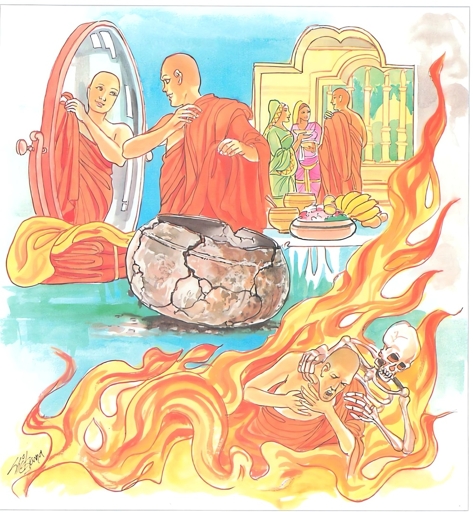

18-3 ඉණිකුණුව උපන් මහණෙක්
මෙම කතාව ධම්මපද අටුවාවෙන් ද කියවන්න.
අයසා’ව මලං සමුට්ඨිතං තදුට්ඨාය තමෙව ඛාදති
එවං අතිධොනචාරිනං සකකම්මානි නයන්ති දුග්ගතිං.
යකඩින් ම නැංගාවූ මලය එයින් ම නැඟ එය ම යම් සේ කා ද, එසේ ම සිවුපසය පස් විකා පරිභෝග කරණ ප්රඥායෙන් ඉක්මුනුහු (හෙවත් පසය නොපස්විකා වළඳන මහණා) ස්වකීය ඒ පාපකර්මයෝ දුගතියට පමුණුවන්නාහ.

සැවැත් නුවර වැසි කුලපුත්රයෙක් පැවිදිව ලැබූ උපසම්පදා ඇතියේ තිෂ්ය ස්ථවිරැ යි ප්රසිද්ධ වූයේ ය. ඒ ස්ථවිර එක් කලෙක දනවු වෙහෙරක වස් එළැඹුනේ එහිදී තමන්ට ලැබුනු අට රියනක් පමණැති දළ රෙදිකඩක් වස් පවරා අවුත් සිය බුහුනන අතට දුන්නේ ය. ඕ තොමෝ එය ගෙණ “මේ සළුව මාගේ සහෝදරයාට සුදුසු නැතැ”යි එය තියුණු කරයකින් කැබලි කැබලි කොට කපා වංගෙඩියක ලා කොටා කුඩුකොට පොළා නැවැත වැටි කොට හීන් නූලට අඹරා සළුවක් වියවාලු ය. පසු දිනෙක ඒ ස්ථවිර තෙමේ නූල් ඉදිකටු සපයා ගෙණ ගෙත්තම් කරන්නට දත් තරුණ හෙරණුන් කිහිප නමකුත් එක්කර ගෙණ බුහුන වෙතට ගොස් “එදා මා දුන් සළුව දෙන්න, එයින් මා සිවුරක් මසා ගන්නෙමි”යි ඉල්ලා සිටියේ ය. ඕ තොමෝ එවේලෙහි නව රියන් පමණැති සළුවක් ගෙණවුත් සොහොයුරු තෙරුන් අතට දුන්නී ය.
ඒ ස්ථවිර එය දිග හැර බලා “මා දුන් සළුව මෙය නො වේ, එය දළ ය, අටරියනක් පමණ දිග ය, මෙය සියුම් ය, නවරියනක් තරම් දිග ය, මෙය අක්කාගේ ය, මෙයින් මට වැඩෙක් නැත, මාගේ සළුව ම දෙන්නැ”යි ඉල්ලී ය. “ස්වාමීනී! මෙය ඔබවහන්සේ මට දුන් සළුව, මෙය ගන්නැ”යි කියන ලද්දේ ද ඔහු එය ගන්නට නො කැමැති විය. ඉක්බිති බුහුන තමන් කළ සියල්ල කියා “ස්වාමීනී! මේ සළුව ඔබ වහන්සේගේ ම ය, එහෙයින් මෙය ගෙණ ගොස් සිවුරක් මසා ගන්නැ”යි කිවු ය. ස්ථවිර, සළුව රැගෙන විහාරයට ගොස් සිවුර ගෙත්තම් කරන්නට පටන් ගත. එහිදී බුහුන සිවුර ගෙත්තම් කරන්නන්ට කැඳබත් ඈ හැම දෙයක් පිළියෙළ කොට දුන්නී ය. සිවුරෙහි ගෙත්තම් නිමකළ දවසෙහි වැඩියක් ඕතොමෝ සත්කාර කර වූ ය. ස්ථවිර තෙමේ සිවුර දිග හැර බලා එහි ආලය උපදවා “හෙට ම මෙය පොර වන්නෙමි”යි හකුළා සිවුරු ලන හුණ දණ්ඩෙහි දමා නිදන්නට ගියේ ය. හේ එදා දවල් වැළඳූ අහර දිරවා ගත නො හී එදා රෑ ම කලූරිය කොට ඒ සිවුරෙහි නැම්මෙක ඉණිකුණු ව උපන. සොහොයුරිය, සෝයුරු තෙරුන්ගේ කලුරිය කිරීම අසා මහණුන්ගේ පාමුල වැටී හඬන්නට වූ ය. භික්ෂූහු ඒ තෙරුන්ගේ මළසිරුර ආදාහනය කරවා ගිලන් උවැටන් කළ එකකු නො වූ බැවින් “මොහුගේ සිවුරු පිරිකර සඞ්ඝයාට අයත් ය, එය බෙදමු”යි ඒ සිවුරත් බෙදන්නට ගෙන්වා ගත්හ. ඒ සිවුරෙහි ඉපද සිටි ඉණිකුණු “මොවුහු මා අයත් දැය පැහැර ගණිත්”යි හඬලමින් සිවුර හැම තැන දුවන්නට වන.
බුදුරජානන් වහන්සේ ගඳකිළියෙහි වැඩහුන් සේක් ම දිව කණින් ඒ ඉණිකුණුගේ හැඬීම අසා “ආනන්ද! තිස්සගේ සිවුරු පිරිකර සත් දවසක් ගත වනතුරු නො බෙදා බැහැර තබන්නට කියව”යි වදාළ සේක. උන්වහන්සේ එසේ කර වූහ. ඉණිකුණු සත්වන දා කලුරිය කොට ඉණිකුණු අත්බවෙන් මිදී තුසිත දෙව්ලොවෙ උපන. බුදුරජානන් වහන්සේ අටවන දා “තිස්සගේ සිවුරු පිරිකර බෙදා ගණිවු”යි නියම කොට වදාළ සේක. භික්ෂූහු එසේ කළහ. “කුමක් හෙයින් බුදුරජානන් වහන්සේ තිස්ස තෙරුන්ගේ සිවුරු පිරිකර සත් දවසක් නො බෙදා තබන්නට නියම කොට අටවනදා බෙදා ගන්නට නියම කළ සේක් දැ?”යි භික්ෂූහු කතාවක් ඉපද වූහ. උන්වහන්සේ ඔවුන් වෙත වැඩම කොට “මහණෙනි! තමුසේලා කුමක් ගැණ කතා කරන්නහු දැ?”යි අසා වදාළ කල්හි ඔවුහු “තිස්ස තෙරුන්ගේ සිවුරු පිරිකර බෙදීමෙහි ලා බුදුරජුන් කළ නියමය ගැණැ”යි සැළ කළහ. “මහණෙනි! තිස්ස කලුරිය කොට ඔහු අළුත මසා ගත් සිවුරෙහි ඉණිකුණුව ඉපද, තමුසේලා ඒ සිවුර බෙදන්නට ගත් ඇසිල්ලෙහි ම මූලා මාගේ සිවුර බෙදා ගණිති’යි හඬමින් වැලපෙමින් සිවුර හැම තැන දුවන්නට වන, තමුසේලා ඒ වේලෙහි සිවුර බෙදා ගත්තහු නම්, ඉණිකුණා තමුසේලා කෙරෙහි උපදවන ක්රෝධයෙන් සිත දූෂිත කොට ගෙණ අපායයෙහි උපදිනු ඇත, ඒ නිසා එදා සිවුරු බෙදීම නවතාලන්නට නියම කෙළෙමි, දැන් ඉණිකුණා මැරී ගොස් තුසිත දෙව්ලොව ඉපිද සිටුනා බැවින් තමුසේලාට සිවුරු බෙදා ගන්නට අනුදන්නා ලදැ”යි වදාළ සේක.
ඉක්බිති ඒ භික්ෂූන් වහන්සේලා “ස්වාමීනි! මේ තණ්හාව එකාන්තයෙන්ම ඉතා බිහිසුණු ය, ඉතා බියකරු ය”යි කී කල්හි “එසේය, මහණෙනි! සත්ත්වයාහට තණ්හාව විපත් කර ය, යම්සේ යකඩින් නැගි මල එම යකඩය කා විනාශ කෙරේ ද, වැඩකට ගන්නට නොහැක්කක් කෙරේ ද, එපරිද්දෙන් ම මහණෙනි! මේ තණ්හාව ලෝ වැසි හැම සතුන්ගේ ඇතුළත ඉපද ඔවුන් නරකාදියෙහි උපදවා විනාශයට පමුණුවා”යි වදාරා මේ ධර්මදේශනාව කළ සේක.
අයසාව මලං සමුට්ඨිතං තදුට්ඨාය තමෙව බාදති,
එවං අතිධොනචාරිනං සකකම්මා හි නයන්ති දුග්ගතින්ති.
යකඩින්ම නැගුනු මලය එයින් ම නැගී එය ම යම්සේ කා දමා ද, එසේ සිවුපසය නො පස්විකා වළඳන මහණහු ස්වකීය වූ ඒ පාපකර්මයෝ දුගතියට පමුණු වන්නාහු ය.
අයසා එව මලං සමුට්ඨිතං = යකඩින්ම නැගුනු මලකඩ.
අය (අයස්) නම්: අද ව්යවහාරයෙහි එන යකඩ ය. ඒ ලොහයෙකි. පදසාධනටීකායෙහි කාලලොහය යි කියන ලදී. අය ශබ්දය මනෝගණික බැවින් අයසා යි සිටියේ ය. ශබ්ද ශාස්ත්රයෙන් විස්තර දත හැකි ය. මේ ලොහය මිනිසුනට අතිශය ශ්රේෂ්ඨ වූ රසායනයෙක් ද වෙයි. ආයුෂ දෙන්නේ ය. බලවීර්ය්ය දරන්නේ ය. රෝග නසන්නේ ය. මද වඩන්නේ ය. එහෙයින් අයස් (යකඩ) සමාන කිසිත් දැයෙක් නැතැ යි ද වෛද්යශාස්ත්ර යෙහි දක්වන ලද්දේ ය.
“ආයුඃ ප්රදාතා බලවීර්ය්යධාතා,
රොගාපහර්තා මදනස්ය කර්තා,
අයඃසමානං න හි කිඤ්විදසති
රසායනං ශ්රෙෂ්ඨතමං නරාණාම්”
යනු එහි ආයේ ය.
තතො උට්ඨාය තං එව බාදති - එයින් නැගී එයම කා දමන්නේ ය.
මෙයින් වදාළෝ යකඩයෙහි හටගන්නා යකඩ මලයෙන් ම යකඩය නැසී යන බව ය. යකඩ මලය යකඩය ම කා දමන බව ය.
එවං අතිධොනචාරිනං = එසේ ම සිවුපසය ප්රත්යවේක්ෂා නො කොට වළඳන මහණහු.
ධොන නම්: සිවුපසයයි. “ධොන වුච්චන්ති චත්තාරො පච්චයා” යනු අටුවා. ශාසනික භික්ෂූන් විසින් සිවුපසය වැළඳිය යුත්තේ එහි ආදීනව - ආනිසංස සැලකීමෙනි. මේ සිවුපසය මේ පිණිසය යි ප්රත්යවේක්ෂා කොට සලකා වැළඳීමෙහි නුවණින් තොර වූ ප්රත්යවේක්ෂා කොට වළඳන නුවණින් බැහැර වූ මහණ, අතිධොනචාරී නම්. සසර බිය දක්නා සුලු ව වසන්නා වූ ඉතා සුලු වරද පවා මහත් කොට ගන්නා භික්ෂූන් වහන්සේ සිවුපසයෙහිලා නුවණින් දැන “ශීතොෂ්ණ නසනු පිණිස මැසි මදුරු අවුසුළන් නයිපොළොන් ඈ උවදුරු නසනු පිණිස, ලජ්ජා ස්ථාන වසාගණු පිණිස මම සිවුරු දරමි, කෙළිසෙල්ලම් පිණිස මද වැඩීම පිණිස, තරබාරුවනු පිණිස, උනුතැන් පුරවනු පිණිස, සැරසීම පිණිස ආහාර නො ගණිමි, යන්තමකින් සිරුර පවත්වා ගණු පිණිස, සාපිපාසා දුක් නසනු පිණිස, බඹසර රැකීම පිණිස, බඩගිනි වේදනා නසනු පිණිස, දුක් වේදනා නො ද උපදවනු පිණිස මම ආහාර ගණිමි, ශීතොෂ්ණ නසා මැසි මදුරු අවුසුළන් නයි පොළොන් ඈ උවදුරු නසා ඍතුපීඩා නසා වග වලස් බිය නසා සිත එකඟ කරණු පිණිස මම සෙනසුන් සේවනය කරමි, හැමකල්හි උපදනා දුක්වේදනා නසා නීරෝග වනු පිනිස බෙහෙත් පිරිකර ගිලන්පස මම ගණිමි”යි මෙසේ ප්රත්යවේක්ෂා කරන්නාහ.
යකකම්මා හි නයන්ති දුග්ගතිං = ස්වකීය පාපකර්මයෝ දුගතියට පමුණු වන්නාහ.
මෙසේ සිවුපසය පස්විකා වැළඳිය යුතු වුව ද එසේ වළඳන නුවණින් තොර වූ මහණ අතිධොනචාරී වූයේ ආශයෙන් මැඩී කළ අකුශල බලයෙන් දුගතියට යන්නේ ය යි වදාළ සේක. [1]
ධර්මදේශනාවගේ අවසානයෙහි බොහෝ දෙන සෝවන් ඵලාදියට පැමිණියාහුය.
තිෂ්යස්ථවිර වස්තුව නිමි.
-
1-12 ‘දුග්ගනිං ගතො’ යනු බලනු. ↑